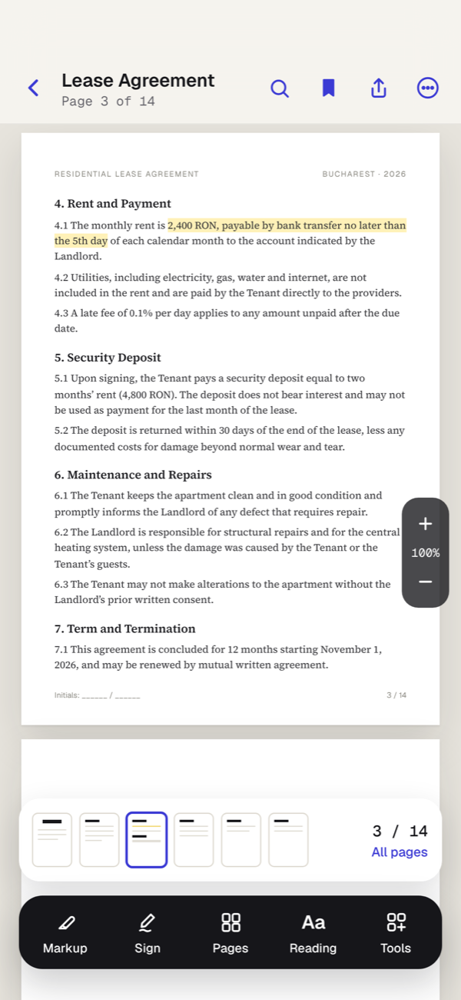
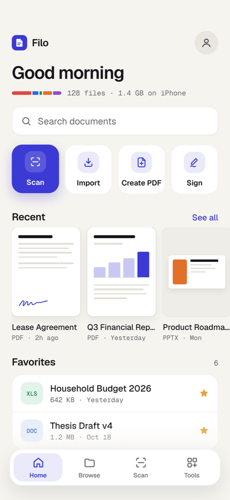
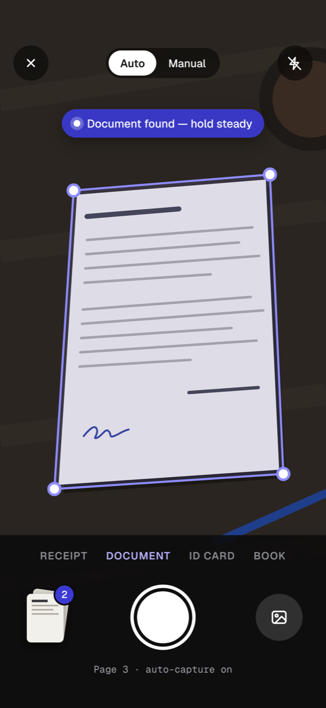
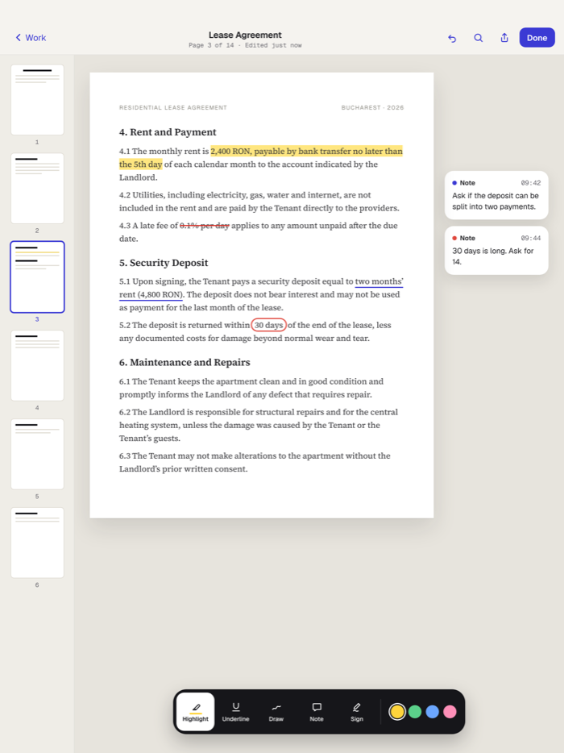
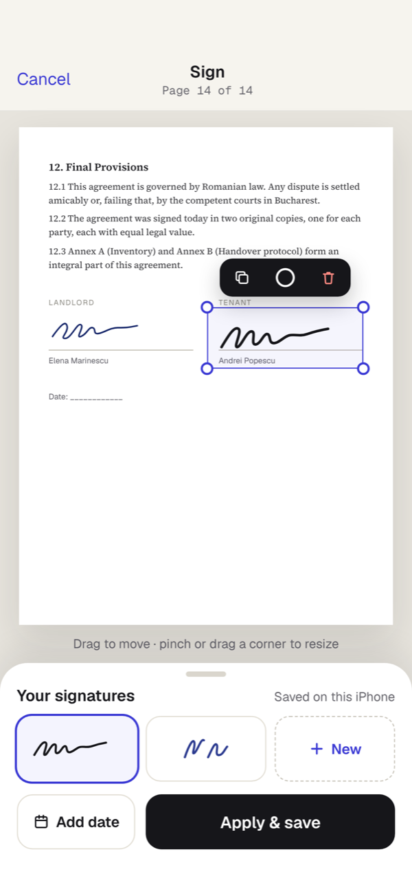
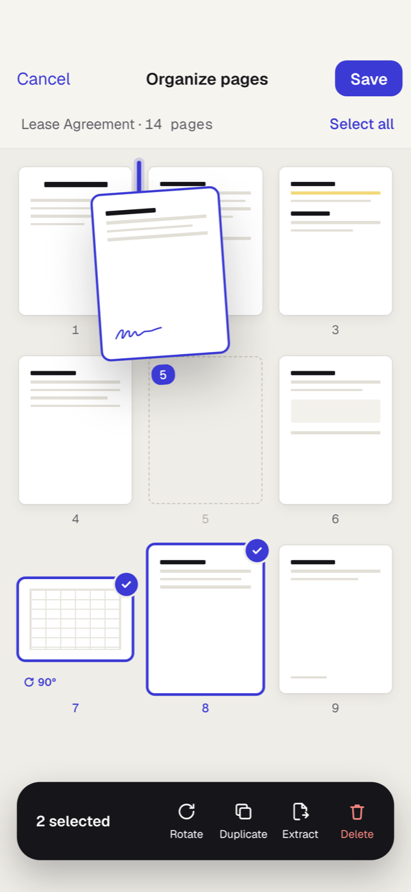

All your documents.
One beautiful place.
Read, scan, sign and organize PDFs and Office files on iPhone, iPad and Mac. Everything works offline, with no account, and your files stay on your devices.
- No account
- No ads
- Works offline



IPHONE · IPAD · MAC
One app. Every screen you own.
Scan on your iPhone, mark up on your iPad, finish on your Mac. Filo feels at home on each one, from the pocket to the desk.

Scan receipts and sign forms the moment they land in your hand.
A sidebar library, a page strip and Apple Pencil markup with room to think.
Menus, keyboard shortcuts and drag and drop from Finder. Scan on your iPhone, and with Pro sync the PDF is waiting on your Mac.
Buy Pro once, use it everywhere. With Pro, your library syncs between all your devices through your own iCloud.
FEATURES
Everything you do with paper, done in seconds.
Paper in. Perfect PDF out.
Point your camera at a receipt, contract or whiteboard. Filo finds the edges, straightens the page, removes shadows and saves a clean, multi-page PDF.
- Automatic capture and edge detection
- Color, grayscale and black & white filters
- With Pro, every word in a scan becomes searchable
Sign anything, anywhere.
Draw your signature once with your finger. Then drop it onto leases, forms and NDAs, resize it, add the date and send the PDF back in under a minute.


Pages, exactly how you want them.
Drag pages to reorder, rotate a sideways scan, pull out the three pages you need, or merge a whole folder into one PDF.
Highlight, underline, draw and add notes without covering the page.
Turn photos and images into one PDF, in the order you choose.
Search names, folders and the text inside your PDFs, instantly.
Shrink big PDFs so they fit in an email, with a size preview first.
Your files stay on your devices.
There’s no Filo account and no Filo cloud. Scanning, text recognition and conversions all happen on your device, so your documents stay private even from us.
Read our privacy policy →Open the app and start. Nothing to sign up for.
Everything works in airplane mode.
Lock the app, or keep a private vault with Pro.
We don’t sell or share anything about you.
PRICING
Free for everyday paperwork. Pro when you want more.
Free forever. No trial, no catch.
- Read PDF, Word, Excel, PowerPoint, images and text
- Unlimited scanning
- Sign, highlight and annotate
- Merge, split, reorder, and photos to PDF
- Folders, favorites and search
- On iPhone, iPad and Mac
Or $3.99 per month, or $39.99 once for life.
- Everything in Free, plus:
- Search the text inside every scan
- Scans that name and file themselves
- Sync across iPhone, iPad and Mac with your iCloud
- Private vault, locked with Face ID or Touch ID
- Compress, protect, watermark and batch tools
- One purchase for iPhone, iPad and Mac
- Family Sharing for up to 6 people
Prices in USD; local prices are shown in the App Store. Subscriptions renew automatically until cancelled in Settings › Apple ID.
Questions, answered
Do I need an account?
No. Filo works the moment you open it, with no sign-up, email or password.
Where are my documents stored?
On your device. If you turn on sync with Pro, they’re also stored in your own private iCloud account, which we can’t access.
Can I edit Word or Excel files?
Office files open read-only, in Apple’s built-in viewer. Filo doesn’t edit or convert them; to sign or mark up, use a PDF version.
Does Filo work on iPad and Mac?
Yes. It’s one app for iPhone, iPad and Mac, so you download it once from the App Store. Pro bought on one device unlocks on all of them signed in to the same Apple Account, and Pro sync keeps your library the same everywhere.
How does the free trial work?
The yearly plan starts with 7 free days. We remind you on day 5. Cancel at least 24 hours before the trial ends, in Settings › [your name] › Subscriptions, and you won’t be charged.
Are signatures made in Filo legally valid?
A drawn signature is a simple electronic signature, which is accepted for many everyday documents. Some contracts need a verified or qualified signature, so check what your document requires.
Still need help? Email ovidiutoma.app+filo@gmail.com.
Clear the paper off your desk today.
Download Filo free for iPhone, iPad and Mac.
Download on the App Store